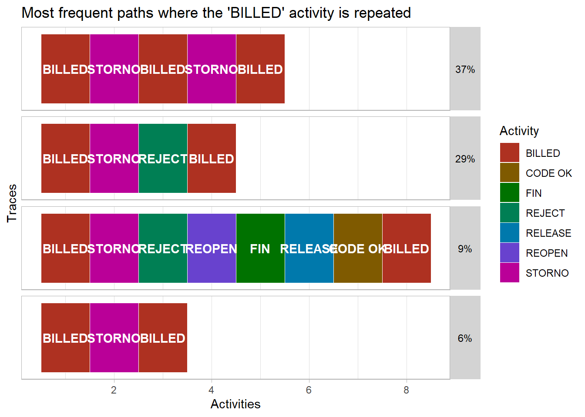
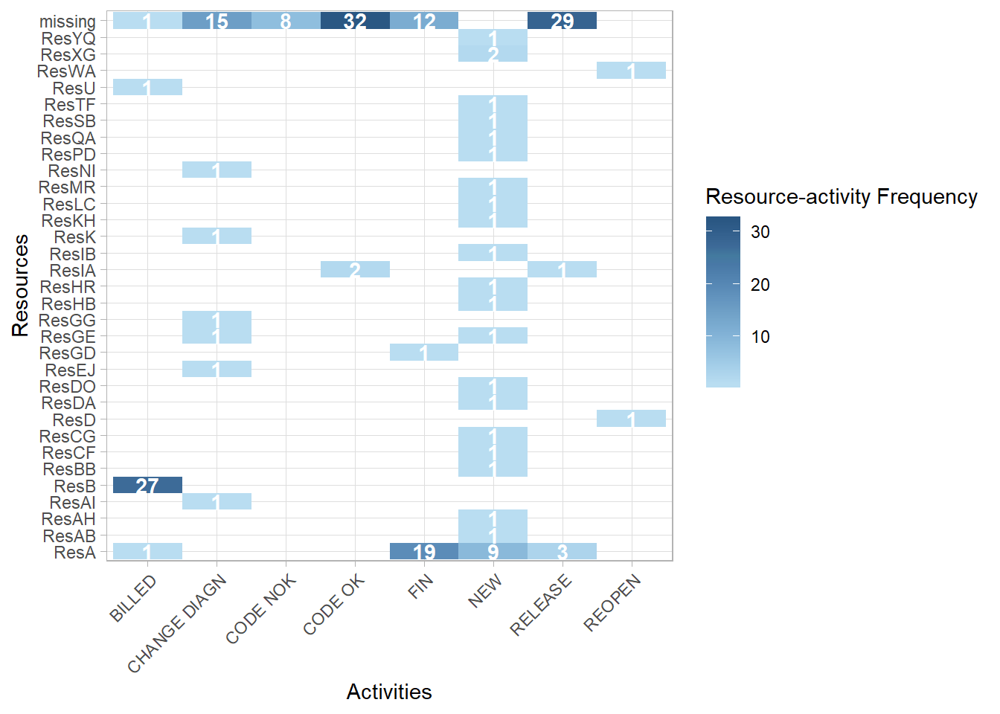
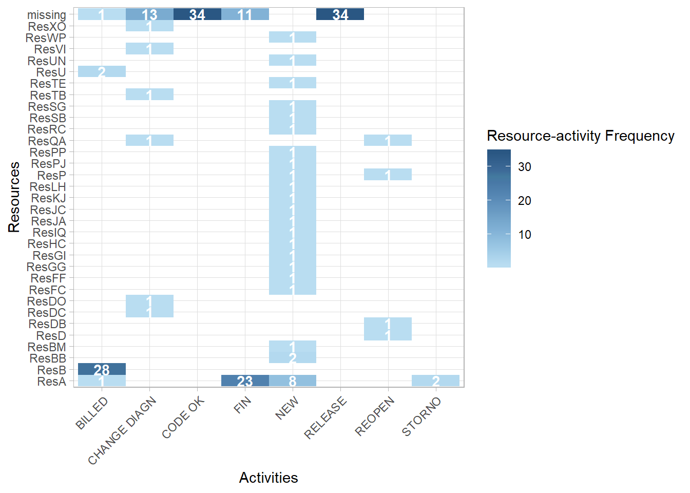
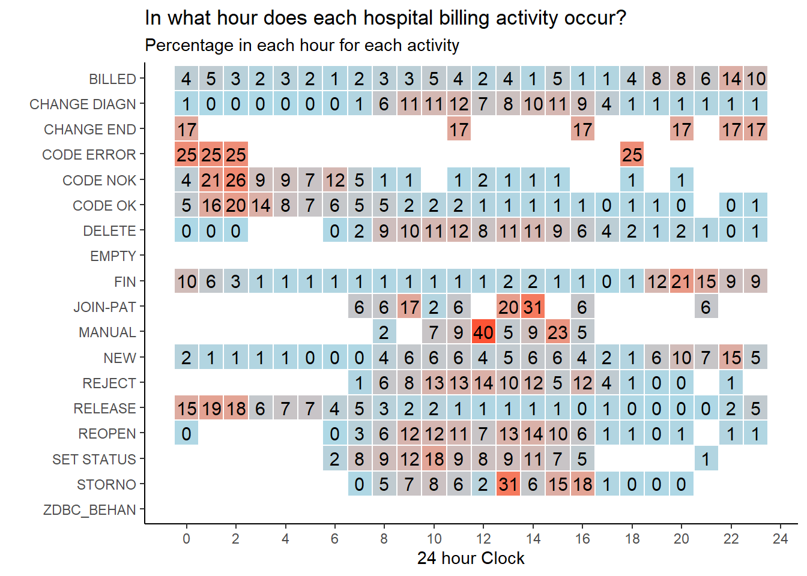
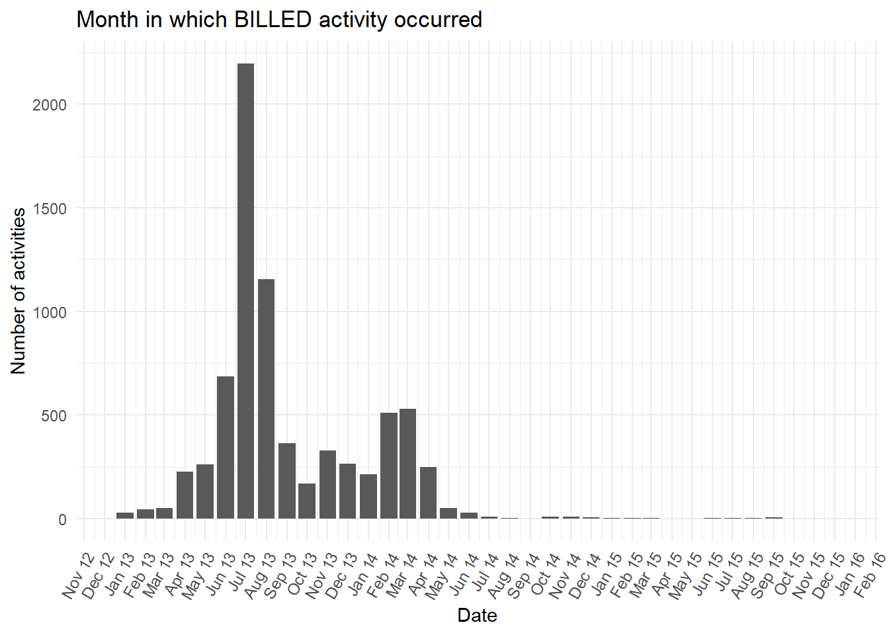

Chapter 8 Process Mining
8.1 What is Process Mining?
Process mining techniques can visualise the many paths that cases can take in organisations. For example, a patient being treated in a hospital or a complaint handled by a train company. However, seeing every path cases take in a process map is often overwhelming. Fortunately, there are many ways to simplify process maps we explore in this chapter.
Data science techniques can also be applied to process mined data. For example, predicting the time it will take a case to complete a process, or recommending the next best step that should shorten the time to a case completing.
The Coursera Process Mining course and accompanying Process Mining: Data Science in Action book provide a detailed background to these techniques and their applications in different industries. There is also a free to read Process Mining in Practice book by the same author.
The minimum data needed for process mining are two columns that record:
- Activity: The activities (or events) that took place in the process.
- Date: The date (and perhaps time) each activity occurred.
For example, knowing how and when a complaint is handled in different ways are the two minimum pieces of information needed for process mining in data. Three further data items will offer more insight:
- Resource: The person (or system) that carried out each activity in the process. This is known as the “resource”.
- Lifecycle: The transaction lifecycle of the case at each activity. For example, is the case at “start”, “in progress”, or “complete”.
- State: The state the case was moved into by each activity. This is usually a greater level of detail below the broad transaction lifecycle categories.
For example, the data could tell us the customer is the resource who carried out the payment activity which moves its transaction lifecycle to “complete” and into the state “paid”.
8.2 The event log
8.2.1 Understanding the event log
The
eventdataRpackage contains both artificial and real life event logs. It comes from a family of process mining packages calledbupaRwhich stands for Business Process Analysis with R. The bupaR cheatsheet summaries the key functions from the family of packages in one clear page.Let’s walk through key process mining techniques in a logical order using the
hospital_billingevent log fromeventdataR. How it was created and anonymised is described here. Also, the academic paper Data-driven process discovery: revealing conditional infrequent behavior from event logs explores the same hospital billing event log in figure 6.The example hospital billing event log has already been created for us. Putting it into the
utils::str()function shows us the structure of this R object. The output shows that log holds number of cases, activities, resources, and “traces”. Traces are the unique paths cases take through different activities. Resources are typically the names of people who carried out each activity.
## Classes 'eventlog', 'tbl_df', 'tbl' and 'data.frame': 49951 obs. of 25 variables:
## $ case_id : chr "A" "A" "A" "A" ...
## $ activity : Factor w/ 18 levels "BILLED","CHANGE DIAGN",..: 12 9 14 6 1 12 7 12 9 14 ...
## $ lifecycle : Factor w/ 1 level "complete": 1 1 1 1 1 1 1 1 1 1 ...
## $ resource : Factor w/ 1150 levels "ResA","ResAA",..: 1 NA NA NA 46 1 91 1 NA NA ...
## $ timestamp : POSIXct, format: "2012-12-16 19:33:10" "2013-12-15 19:00:37" ...
## $ actorange : chr NA NA NA "false" ...
## $ actred : chr NA NA NA "false" ...
## $ blocked : chr "false" NA NA NA ...
## $ casetype : chr "A" NA NA NA ...
## $ closecode : chr NA "A" NA NA ...
## $ diagnosis : chr "A" NA NA NA ...
## $ flaga : chr "false" NA NA NA ...
## $ flagb : chr "false" NA NA NA ...
## $ flagc : chr NA NA NA "false" ...
## $ flagd : chr "true" NA NA NA ...
## $ iscancelled : chr "false" NA NA NA ...
## $ isclosed : chr "true" NA NA NA ...
## $ msgcode : chr NA NA NA NA ...
## $ msgcount : int NA NA NA 0 NA NA NA NA NA NA ...
## $ msgtype : chr NA NA NA NA ...
## $ speciality : chr "A" NA NA NA ...
## $ state : chr "In progress" "Closed" "Released" NA ...
## $ version : chr NA NA NA "A" ...
## $ activity_instance_id: chr "1" "2" "3" "4" ...
## $ .order : int 1 2 3 4 5 6 7 8 9 10 ...
## - attr(*, "case_id")= chr "case_id"
## - attr(*, "activity_id")= chr "activity"
## - attr(*, "activity_instance_id")= chr "activity_instance_id"
## - attr(*, "lifecycle_id")= chr "lifecycle"
## - attr(*, "resource_id")= chr "resource"
## - attr(*, "timestamp")= chr "timestamp"- Also, at the bottom of the output above, the event log has six additional attributes:
case_ida unique case id to tell us which activity rows belong to each case.activitya description of what happened.activity_instance_ida unique id for each activity.lifecyclethe status of the case at each activity such as “complete”.resourcewho did the activity.timestampwhen the activity happened.
- We return just those attributes below..
## List of 9
## $ names : chr [1:25] "case_id" "activity" "lifecycle" "resource" ...
## $ row.names : int [1:49951] 1 2 3 4 5 6 7 8 9 10 ...
## $ case_id : chr "case_id"
## $ activity_id : chr "activity"
## $ activity_instance_id: chr "activity_instance_id"
## $ lifecycle_id : chr "lifecycle"
## $ resource_id : chr "resource"
## $ timestamp : chr "timestamp"
## $ class : chr [1:4] "eventlog" "tbl_df" "tbl" "data.frame"- We would typically expect cases to be in one of several states as they pass through a process. Below we can see all the values of the
statecolumn. It appears thatstatehas not been used to create alifecycleattribute in the event log that would define when the case is “complete”. Instead, all cases have been marked as “complete” at every activity.
## # A tibble: 11 x 2
## state n
## <chr> <int>
## 1 Billable 499
## 2 Billed 7432
## 3 Check 1
## 4 Closed 7886
## 5 Empty 179
## 6 In progress 17809
## 7 Invoice rejected 229
## 8 Rejected 70
## 9 Released 7909
## 10 Unbillable 84
## 11 <NA> 7853## # A tibble: 1 x 2
## lifecycle n
## <fct> <int>
## 1 complete 49951- This heatmap counts the activities and the state they were in at the time the activity was carried out.
eventdataR::hospital_billing %>%
dplyr::count(activity,state) %>%
ggplot2::ggplot() +
ggplot2::aes(x = state,
y = activity,
fill = n) +
ggplot2::geom_tile(width=0.9,
height=0.9)+
ggplot2::geom_text(aes(label = base::ifelse(n>0,
base::format(n,
big.mark = ",",
scientific = FALSE),
NA)),
size = 3) +
ggplot2::scale_fill_gradient(low = "white",
high = "red",
limits = c(-500,12000)) +
ggplot2::theme_minimal() +
ggplot2::theme(axis.text.x = element_text(angle = 60,
hjust = 1),
legend.position = "none",
axis.title.y = element_text(angle = 0,
vjust = 0.5)) +
ggplot2::labs(x = "State",
y = "Activity",
title = "Case activities and the case state the activity creates")The states
Billed,ClosedandReleasedare almost entirely triggered by one activity (BILLED,FIN, andRELEASErespectively). Only the stateIn progressis triggered by more than one activity, though it is almost entirely the activitiesNEWandCHANGE DIAGN, followed byDELETE,REOPENin smaller numbers.With more domain knowledge from an expert who works with the real life process it would be possible to create a useful lifecycle attribute. For example, a sensible categorisation might be to:
- assign the value of
lifecycleto “complete” for rows with the state valuesBilled,Closed,Invoice rejected,Rejected,ReleasedorUnbillable. - assign the value of
lifecycleto “in progress” for rows with the state valuesBillableandIn progress, and, - assign the value of
lifecycleto “start” when the activity isNEW.
- assign the value of
Some state values are
NA. These missing values could be imputed with the last known value of state when it was notNA.
8.3 Visualise the event log
- To quickly and intuitively understand the hospital billing event log we can explore it like any other data frame or tibble in R. First we view all the events for three cases using
dplyrverbs andDT::datatable().
eventdataR::hospital_billing %>%
dplyr::filter(case_id %in% c("A","B","C")) %>%
dplyr::select(case_id,activity,resource,timestamp,state,lifecycle) %>%
dplyr::arrange(case_id,timestamp) %>%
DT::datatable(
caption = "Top ",
filter = "top",
extensions = c("FixedColumns", "Buttons"),
options = list(columnDefs = list(list(width = "150px",
targets = c(4))))
)In this table the cases A and C have a final
activityofBILLED. Thestatethat theBILLEDactivity moves the cases into is also calledBilled.In contrast, for case B the
BILLEDactivity was not carried out. Its final state in the log isDELETE. Perhaps the hospital bill for this person was withdrawn or cancelled for some reason?
8.3.1 Process map
- We can quickly create process maps from an event log using the function
processmapR::process_map().
## Warning: Prefixing `UQ()` with the rlang namespace is deprecated as of rlang 0.3.0.
## Please use the non-prefixed form or `!!` instead.
##
## # Bad:
## rlang::expr(mean(rlang::UQ(var) * 100))
##
## # Ok:
## rlang::expr(mean(UQ(var) * 100))
##
## # Good:
## rlang::expr(mean(!!var * 100))
##
## This warning is displayed once per session.This process map displays the entire event log to show every activity that has occurred and in what order. Plotting the detail of every case path (or trace) is often overwhelming. The process can appear more complex than it really is. Maps that are too detailed have been called “spaghetti-like” by the authors of an algorithmic method we will explore later that is one of several ways to simplify process maps.
Process maps can be simplified in many ways. Each method helps us understand both typical and rare case paths more easily. A basic simplification is to create the process map only for a small number of cases. Below only cases A, B and C from the table above are mapped.
eventdataR::hospital_billing %>%
dplyr::filter(case_id %in% c("A","B","C")) %>%
processmapR::process_map()If no arguments are included in the
processmapR::process_map()function the number in the box (or node) and its colour are how many cases have had that activity carried out. Darker colours represent more cases. The number on the arrows (or edges) and their thickness represent how many cases have passed between two activities in the direction of the arrow.We can also subset event logs using the
edeaR::trace_frequency()function so that the process map shows only the most common paths cases take . Let’s filter the log to contain only cases that have followed the top 90% most frequent paths, then pipe (%>%) that reduced log it into thee process map function.
eventdataR::hospital_billing %>%
edeaR::filter_trace_frequency(percentage = 0.9) %>%
processmapR::process_map()The default values on a process map are the the number of cases. The process map below uses a custom profile. We have adjusted the the numbers inside each box (or node) to include both the absolute number of times the activity was carried out, and in brackets below is the percentage of those activities among all the activities carried out. This means that the percentages in the brackets across all the boxes in the map sum to 100%.
The labels on the arrows (or edges) have also been altered. They now show the absolute number of times cases move from each activity to the next in the direction of the arrow. The percentages in brackets on all the arrows coming out of each box will sum to 100%.
eventdataR::hospital_billing %>%
edeaR::filter_trace_frequency(percentage = 0.9) %>%
processmapR::process_map(type_nodes = processmapR::frequency("absolute"),
sec_nodes = processmapR::frequency("relative"),
type_edges = processmapR::frequency("absolute"),
sec_edges = processmapR::frequency("relative"),
rankdir = "TB")Next we alter the value in the brackets in the box labels to show the unique number of cases passing through that activity. The number above it (not in brackets) is usually higher for this event log. This tells us some cases must pass through that activity more than once.
We also alter the label on the arrows (or edges) inside the brackets to show the median average time between the two activities. The thickness of the arrow still represents the percentage of cases moving from that node.
eventdataR::hospital_billing %>%
edeaR::filter_trace_frequency(percentage = 0.9) %>%
processmapR::process_map(type_nodes = processmapR::frequency("absolute"),
sec_nodes = processmapR::frequency("absolute_case"),
type_edges = processmapR::frequency("relative"),
sec_edges = processmapR::performance(FUN = median,
units = "days",
flow_time = "inter_start_time"
),
rankdir = "TB")8.3.2 Trace explorer
- Another way to visualise the paths that cases take is with the trace explorer. This plot displays each trace (or path) sorted in descending order of frequency. The coloured squares represent the activities cases pass through in order from left to right. We have also filtered the log first to show only the top 90% most frequent paths to mirror the process map filter above.
eventdataR::hospital_billing %>%
edeaR::filter_trace_frequency(percentage = 0.9) %>%
processmapR::trace_explorer(coverage = 1,
type = "frequent",
.abbreviate = T)Compared to the process map, the trace explorer is easier for domain experts to identify case paths that are unexpected or not allowed. This is known as “conformance checking” that is also explored later.
The Trace Explorer chart also allows easy identification and exploration of repeated activities that may also be unusual or unexpected. For example, in the process maps above the
BILLEDactivity occurs more than once for some cases. We can see this where the unique number of cases in brackets in each box is a lower number than the number of cases passing through the activity that is shown above it. Below we filter the log first to only include cases where theBILLEDactivity occurred tow or more times. We also trim the path (or trace) to only show the first and last time theBILLEDactivity occurs.
eventdataR::hospital_billing %>%
processcheckR::check_rule(processcheckR::contains(activity = "BILLED", n = 2)) %>%
tidylog::filter(contains_BILLED_2 == TRUE) %>%
edeaR::filter_trim(start_activities = "BILLED",
end_activities = "BILLED") %>%
processmapR::trace_explorer(coverage = 0.8,
type = "frequent",
.abbreviate = T)- Also, as the trace explorer is a ggplot chart, we are also able to alter the plot format in two ways. We can save it as an R object and then adjust elements of that nested list directly. And we can add on additional ggplot format settings using using the + symbol. Both methods are demonstrated below.
p <- eventdataR::hospital_billing %>%
processcheckR::check_rule(processcheckR::contains(activity = "BILLED", n = 2)) %>%
tidylog::filter(contains_BILLED_2 == TRUE) %>%
edeaR::filter_trim(start_activities = "BILLED",
end_activities = "BILLED") %>%
processmapR::trace_explorer(coverage = 0.8,
type = "frequent",
.abbreviate = F) +
ggplot2::labs(title = "Most frequent paths where the 'BILLED' activity is repeated")## filter: removed 46,721 rows (94%), 3,230 rows remainingp$data$relative_frequency <- round(p$data$relative_frequency,2)
p$theme$strip.background$fill <- "lightgrey"
p$theme$strip.text$colour <- "black"
p
8.3.3 Conformance checking
- We can also use processcheckR to identify which traces either follow or break certain rules. For example, below we narrow down the process map to only show cases that have the
CHANGE_DIAGNactivity carried out. This change of diagnosis activity we can imagine may be a significant event in a hospital with an impact on the final bill so would be worth checking that certain agreed processes are followed. This might include detecting both mistakes in the process and potential fraudulent activity.
eventdataR::hospital_billing %>%
edeaR::filter_trace_frequency(percentage = 0.9) %>%
processcheckR::filter_rules(r1 = processcheckR::and("CHANGE DIAGN","REOPEN"),
r2 = processcheckR::succession("NEW","CHANGE DIAGN")) %>%
processmapR::process_map(type_nodes = processmapR::frequency("absolute"),
sec_nodes = processmapR::frequency("absolute_case"),
type_edges = processmapR::frequency("relative"),
sec_edges = processmapR::performance(FUN = median,
units = "days",
flow_time = "inter_start_time"
),
rankdir = "TB")8.3.4 Dotted chart
The dotted chart is similar in style to the trace explorer. It also displays activities in the order they occur horizontally. The main difference is that each line of dots in the dotted chart represents an individual case. The trace explorer instead displays the unique paths for one or more cases.
In the dotted chart below the x axis argument is set so that the position of each dot horizontally is the
absolutedate when each activity occurred. Also, the horizontal lines are sorted in descending order of the total trace time (or duration) of each case. The shortest duration case is at the top and the longest at the bottom.
eventdataR::hospital_billing %>%
edeaR::filter_trace_frequency(percentage = 0.9) %>%
processmapR::dotted_chart(x = "absolute",
sort = "duration")## Joining, by = "case_id"
This dotted chart is very useful for insight into the hospital billing process. At the top of the plot, the pink dots show many cases which begin in early 2013 with the
NEWactivity have no further activities recorded. This short single activity path can also be seen in the first process map we drew in this chapter. It is the arrow that goes from theNEWbox directly to theENDcircle without passing through any other activity boxes. However, this short path is much easier to identify with a dotted chart. It also reveals the date range in which it occurs most often. The only way to identify changes in case paths over time with the process map is to animate, or draw multiple maps from event logs that are filtered with different time periods.All of the
NEWactivities occur in a narrow time range in early 2013. This strongly suggests the data was extracted from the live system by selecting only cases where theNEWactivity occurred in early 2013.Again, because the function
processmapR::dotted_chart()creates a ggplot chart we can alter how it appears by adding ggplot settings or updating the R object. For example, a useful change we make to this dotted chart is to show monthly breaks on the x-axis.
# Put the dotted chart into an R object
p <- eventdataR::hospital_billing %>%
edeaR::filter_trace_frequency(percentage = 0.9) %>%
processmapR::dotted_chart(x = "absolute",
sort = "duration") ## Joining, by = "case_id"# change the format of the x axis to a date
p$data$start <- as.Date(p$data$start)
p +
ggplot2::scale_x_date(date_breaks = "1 month",
labels = scales::date_format("%b %y")) +
ggplot2::theme_minimal() +
ggplot2::theme(
axis.text.x = element_text(
angle = 60,
hjust = 1,
size = 9
)) +
ggplot2::labs(
title = "Month on which NEW activity occurred",
x = "Date",
y = "Number of activities"
) +
ggplot2::guides(colour = guide_legend(override.aes = list(size=5)))
- Let’s further explore the activity over time. The bar plot below counts the number of occurrences of the
NEWactivity in each month. We can see all theNEWactivities occurred between January and April 2013.
min <- lubridate::as_date(base::min(eventdataR::hospital_billing$timestamp))
max <- lubridate::as_date(base::max(eventdataR::hospital_billing$timestamp))
eventdataR::hospital_billing %>%
edeaR::filter_activity(activities = c("NEW")) %>%
dplyr::mutate(day = lubridate::as_date(timestamp),
month = base::cut(day, "month"),
month = lubridate::as_date(month)) %>%
dplyr::count(month) %>%
ggplot2::ggplot() +
ggplot2::aes(x = month,
y = n) +
ggplot2::geom_bar(stat = "identity") +
ggplot2::scale_x_date(date_breaks = "1 month",
labels = scales::date_format("%b %y"),
limits = c(min,max)) +
ggplot2::theme_minimal() +
ggplot2::theme(
axis.text.x = element_text(
angle = 60,
hjust = 1,
size = 9
)) +
ggplot2::labs(
title = "Month on which NEW activity occurred",
x = "Date",
y = "Number of activities"
) ## Warning: Removed 1 rows containing missing values (position_stack).- Next we sort the order of the rows of dots by the start date.
p <- eventdataR::hospital_billing %>%
edeaR::filter_trace_frequency(percentage = 0.9) %>%
processmapR::dotted_chart(x = "absolute",
sort = "start")## Joining, by = "case_id"# change the format of the x axis to a date
p$data$start <- as.Date(p$data$start)
p +
ggplot2::scale_x_date(date_breaks = "1 month",
labels = scales::date_format("%b %y")) +
ggplot2::theme_minimal() +
ggplot2::theme(
axis.text.x = element_text(
angle = 60,
hjust = 1,
size = 9
)) +
ggplot2::labs(
title = "Month on which NEW activity occurred",
x = "Date",
y = "Number of activities"
) +
ggplot2::guides(colour = guide_legend(override.aes = list(size=5)))- This reveals two distinct groups of cases, one where the
BILLEDactivity (green dots) often occurs during autumn 2013, and the other whereBILLEDoften occurs during spring 2014. However, with so many dots plotted, it is hard to follow the path for a case individually. This is known as “over-plotting”. We can reduce over-plotting by sampling the cases withdplyrfirst. We can also use the plotly version of a dotted chart and hover our mouse pointer over each dot. This reveals the case id making is possible to follow the path of individual cases by hand.
eventdataR::hospital_billing %>%
edeaR::filter_trace_frequency(percentage = 0.9) %>%
dplyr::sample_n(size = 100) %>%
processmapR::plotly_dotted_chart(x = "absolute",
sort = "start")## Joining, by = "case_id"8.3.5 Resource exploration
The bupaR visualisations explored in this chapter so far are about the case, telling us which activities were carried out and in what order. However, we also know who carried out each activity.
Below we create a small data set of 30 randomly selected complete cases that begin with the
NEWactivity and end with theBILLEDactivity. We then view the activities for these 30 cases in a process map.
limited <- eventdataR::hospital_billing %>%
edeaR::filter_endpoints(start_activities = "NEW",
end_activities = "BILLED") %>%
dplyr::sample_n(30)
limited %>% processmapR::process_map()- Let’s now visualise who carried out each of those activities (the resource) in a resource process map using
processmapR::resourcemap(). We also add a new factor level to the resource column where no resource has been recorded. This is so that the resource map draws fully and does not stop where the resource information is missing leaving orphaned nodes (or boxes).
limited$resource = factor(limited$resource, levels=c(levels(limited$resource), "missing"))
limited$resource[is.na(limited$resource)] = "missing"
limited %>% processmapR::resource_map(type_nodes = processmapR::frequency("absolute"),
sec_nodes = processmapR::frequency("absolute_case"),
type_edges = processmapR::frequency("absolute"),
sec_edges = processmapR::performance(FUN = median,
units = "days",
flow_time = "inter_start_time"
),
rankdir = "TB")- We can see from the resource process map above that the resource is often missing for certain activities. In the heatmap below, for these 30 cases, we can see on the top row are the count activities where the resource information is missing.

- We can also plot how many resources were used on each case for the entire log using the
edeaR::resource_frequency()function.
## Warning: Factor `resource` contains implicit NA, consider using
## `forcats::fct_explicit_na`
## Warning: Factor `resource` contains implicit NA, consider using
## `forcats::fct_explicit_na`
- And use the
edeaR::resource_specialisation()function to see if some resources specialise in certain activities across all of the cases.
## Warning: Factor `resource` contains implicit NA, consider using
## `forcats::fct_explicit_na`
## Warning: Factor `resource` contains implicit NA, consider using
## `forcats::fct_explicit_na`
- Finally, using the
processmapR::resource_matrix()we can see which resources (the antecedent) directly pass a case to another resource (consequent) to carry out the next activity just for our limited set of 30 cases.
rm <- limited %>%
processmapR::resource_matrix(type = "absolute")
p1 <- rm %>%
ggplot2::ggplot() +
ggplot2::aes(x = consequent,
y = antecedent,
fill = n) +
ggplot2::geom_tile()+
ggplot2::geom_text(aes(label = base::ifelse(n>0,
base::format(n,
big.mark = ",",
scientific = FALSE),
NA)),
size = 3) +
ggplot2::scale_fill_gradient(low = "white", high = "red") +
ggplot2::theme_minimal() +
ggplot2::theme(axis.text.x = element_text(angle = 60,
hjust = 1),
legend.position = "none",
axis.title.y = element_text(angle = 0,
vjust = 0.5)) +
ggplot2::labs(x = "Consequent",
y = "Antecedent")
p1
8.3.6 Filter interactively within RStudio
- In the central section of the bupaR cheatsheet all of the edeaR event and case filter functions are also available as interactive Shiny Gadgets. For example, running the function
edeaR::ifilter_endpoints()within RStudio will create a dialog from which you can select the start and end activities and filter the log.
filter_end_points <- edeaR::ifilter_endpoints(eventdataR::hospital_billing)
filter_end_points %>% processmapR::process_map()- We can then put this filtered log
filter_end_pointsinto a process map.
8.3.7 Bespoke exploration
Further bespoke explorations are described in this process mining blog post.It includes an example of creating an interruption index to tell us how much a resource “toggles” between multiple cases, and a heatmap to show peak periods during the day.
Let’s re-create the hourly heatmap for our hospital billing data. We can see that some activities are more common at lunchtime (e.g.
STORNOandMANUAL), and some occur in the early hours of the morning (e.g.CODE ERROR). Perhaps the very early activities outside of normal office hours are automatic system activities?
t <- eventdataR::hospital_billing %>%
dplyr::mutate(hour = lubridate::hour(timestamp)) %>%
dplyr::count(activity, hour) %>%
dplyr::group_by(activity) %>%
dplyr::mutate(nn = sum(n)) %>%
dplyr::ungroup() %>%
dplyr::mutate(percent= ((n/nn)*100))
t %>%
ggplot2::ggplot(aes(x = hour,
y = activity,
fill=percent)) +
ggplot2::geom_tile(size=.5, color="white") +
ggplot2::scale_fill_gradient(low = "lightblue",
high = "red",
limits = c(0,50)) +
ggplot2::geom_text(aes(label = base::ifelse(percent>0,
round(percent,0),
NA)),
size = 4,
#fontface = "bold"
) +
ggplot2::theme_classic()+
ggplot2::theme(legend.position = "none") +
ggplot2::labs(x="24 hour Clock",
y="",
title= "In what hour does each hospital billing activity occur?",
subtitle = "Percentage in each hour for each activity",
fill="%") +
ggplot2::scale_y_discrete(limits = rev(levels(eventdataR::hospital_billing$activity))) +
ggplot2::scale_x_continuous(breaks = scales::pretty_breaks(n = 12))
8.3.8 Creating your own event log
In the visualisations so far we have used the hospital billing event log that has been created for us. Creating our own log from raw events data is straightforward. Follow the bupaR “create event log” guidance.
When creating an event log, as well as the activity name and a timestamp, each activity row needs its own globally unique ID, the resource who carried out each activity and a lifecycle status. The lifecycle would typically describe if a case has just started, is in-progress, or is complete when each activity occurs. If a unique activity ID and a lifecycle status are missing they can easily be artifically created using a row count for the ID and by assigning the status to a single value such as “complete” or “NA”. If Who did each activity (the resource) may also be missing. Resource can also simply be assigned as a blank “NA” column.
The example below demonstrates creating an event log with minimum amount of information required to draw a process map with the activity id, resource, and status created artificially before the event log is built with the
bupaR::eventlog()function.
patients <- data.frame(stringsAsFactors=FALSE,
patient = c("John Doe", "John Doe", "John Doe", "John Doe",
"John Doe", "John Doe", "John Doe", "John Doe",
"John Doe"),
activity = c("check-in", "surgery", "surgery", "surgery",
"treatment", "treatment", "surgery", "surgery",
"check-out"),
timestamp = c("2017-05-10 08:33:26", "2017-05-10 08:38:21",
"2017-05-10 08:53:16", "2017-05-10 09:25:19",
"2017-05-10 10:01:25", "2017-05-10 10:35:18",
"2017-05-10 10:41:35", "2017-05-10 11:05:56", "2017-05-11 14:52:36"))
example_log_1 <- patients %>% #a data.frame with the information in the table above
dplyr::mutate(activity_instance = 1:n(),
resource = NA,
status = "complete",
timestamp = anytime::anytime(timestamp)) %>%
bupaR::eventlog(
case_id = "patient",
activity_id = "activity",
activity_instance_id = "activity_instance",
lifecycle_id = "status",
timestamp = "timestamp",
resource_id = "resource"
)
example_log_1 %>% processmapR::process_map()After creating an event log you may need to add additional columns with useful information. This is known as “enrichment”. However, this breaks the attributes you have mapped using the
bupaR::eventlog()function and the event log cannot be used with bupaR functions.Rather than using the
bupar::eventlog()function to recreate the event log, which is time consuming, it’s much faster to usebupar::mapping()to save the attribute mappings and thenbupar::re_map()to add them back to the broken event log. The time saving can be significant for large event logs that can take 5 to 10 mins to re-create whereas the re_map takes only a few seconds.
For example, below we create an event log using the same example data in the bupaR guidance.
patients <- data.frame(stringsAsFactors=FALSE,
patient = c("John Doe", "John Doe", "John Doe", "John Doe",
"John Doe", "John Doe", "John Doe", "John Doe",
"John Doe"),
activity = c("check-in", "surgery", "surgery", "surgery",
"treatment", "treatment", "surgery", "surgery",
"check-out"),
timestamp = c("2017-05-10 08:33:26", "2017-05-10 08:38:21",
"2017-05-10 08:53:16", "2017-05-10 09:25:19",
"2017-05-10 10:01:25", "2017-05-10 10:35:18",
"2017-05-10 10:41:35", "2017-05-10 11:05:56", "2017-05-11 14:52:36"),
status = c("complete", "schedule", "start", "complete", "start",
"complete", "start", "complete", "complete"),
resource = c("Samantha", "Danny", "Richard", "Richard", "Danny",
"Danny", "William", "William", "Samantha")
)
resource_experience_years <- data.frame(stringsAsFactors=FALSE,
resource = c("Samantha", "Danny", "Richard","William", "Samantha"),
years_experience = c(2, 5, 0.2, 6, 8.9))
example_log_1 <- patients %>% #a data.frame with the information in the table above
dplyr::mutate(activity_instance = 1:n(),
timestamp = anytime::anytime(timestamp)) %>%
eventlog(
case_id = "patient",
activity_id = "activity",
activity_instance_id = "activity_instance",
lifecycle_id = "status",
timestamp = "timestamp",
resource_id = "resource"
)
# Save event log Mappings
example_log_1_mapping <- bupaR::mapping(example_log_1)
# enrich and filter the log
example_log_1 <- example_log_1 %>%
dplyr::left_join(resource_experience_years,
by = c("resource" = "resource")) ## Warning: Column `resource` joining factor and character vector, coercing into
## character vector## Error: Only strings can be converted to symbols- To fix the log so that it can be used to draw a process map , below we remap the log attributes with the
bupaR::remap()function. We re-map the attributes we saved in the code above using thebuparR::mapping()function. After remapping We can draw a process map from the re-mapped event log.
8.4 Can we predict the age of a case?
- Perhaps there is a feature in the data that can explain why there are two time periods in which the activity
BILLEDoccurs? This pattern is seen clearly if we visualise the number of times theBILLEDactivity occurs in each month.
eventdataR::hospital_billing %>%
edeaR::filter_activity(activities = c("BILLED")) %>%
dplyr::mutate(day = lubridate::as_date(timestamp),
month = base::cut(day, "month"),
month = lubridate::as_date(month)) %>%
dplyr::count(month) %>%
ggplot2::ggplot() +
ggplot2::aes(x = month,
y = n) +
ggplot2::geom_bar(stat = "identity") +
ggplot2::scale_x_date(date_breaks = "1 month",
labels = scales::date_format("%b %y"),
limits = c(min,max)) +
ggplot2::theme_minimal() +
ggplot2::theme(
axis.text.x = element_text(
angle = 60,
hjust = 1,
size = 9)) +
ggplot2::labs(
title = "Month in which BILLED activity occurred",
x = "Date",
y = "Number of activities") 
- It will be most useful to explore the characteristics known when the first activity (
NEW) is carried out. In this way the early information at case start could be used to predict and better understand in which of the two time periods theBILLEDactivity is likely to occur. Below we extract the characteristics at the start of the process for each case. We also categorise the very detaileddiagnosiscolumn by extracting just the first letter of the full diagnosis code. This is so that the plots created are less complicated.
predictors_at_NEW <- eventdataR::hospital_billing %>%
edeaR::filter_activity(activities = c("NEW")) %>%
tibble::as_tibble() %>%
dplyr::select(case_id,actorange:speciality) %>%
dplyr::mutate(diagnosis_cat = stringr::str_sub(string = diagnosis,
start = 1,
end = 1)) - First we see what is contained in each predictor quickly using skimr.
## Skim summary statistics
## n obs: 11106
## n variables: 18
##
## -- Variable type:character -------------------
## variable missing complete n min max empty n_unique
## actorange 11106 0 11106 NA NA 0 0
## actred 11106 0 11106 NA NA 0 0
## blocked 1106 10000 11106 5 5 0 1
## case_id 1 11105 11106 1 3 0 9999
## casetype 1106 10000 11106 1 1 0 7
## closecode 11106 0 11106 NA NA 0 0
## diagnosis 6456 4650 11106 1 3 0 467
## diagnosis_cat 6456 4650 11106 1 1 0 26
## flaga 1106 10000 11106 5 5 0 1
## flagb 1106 10000 11106 5 5 0 1
## flagc 11106 0 11106 NA NA 0 0
## flagd 1105 10001 11106 4 5 0 2
## iscancelled 1106 10000 11106 5 5 0 1
## isclosed 1098 10008 11106 4 5 0 2
## msgcode 11106 0 11106 NA NA 0 0
## msgtype 11106 0 11106 NA NA 0 0
## speciality 1106 10000 11106 1 1 0 22
##
## -- Variable type:integer ---------------------
## variable missing complete n mean sd p0 p25 p50 p75 p100 hist
## msgcount 11106 0 11106 NaN NA NA NA NA NA NApredictors_at_NEW <- predictors_at_NEW %>%
dplyr::select(-actorange,-actred,-closecode,-flagc,-msgcode,-msgtype)- The skimr output shows 6 columns with all missing values we can remove as they offer no information. Next, we join the first known case characteristics (from when the case started at the
NEWactivity) to the finalBILLEDactivity rows.
billed <- eventdataR::hospital_billing %>%
edeaR::filter_activity(activities = c("BILLED")) %>%
dplyr::mutate(day = lubridate::as_date(timestamp),
month = base::cut(day, "month"),
month = lubridate::as_date(month)) %>%
tibble::as_tibble() %>%
dplyr::select(case_id,day,month) %>%
dplyr::left_join(predictors_at_NEW) ## Joining, by = "case_id"- Finally, we can plot different case characteristics by the month in which the final case activity
BILLEDoccurred. Starting withcasetypewe can see a strong relationship with values A and B. These two values each dominate each of the two peaks separately. The second peak in January to April 2014 was almost allcasetypevalue “A” or “NA” at the first activity (NEW). While the first peak is almost allcasetypevalue “B” at the first activity.
billed %>%
dplyr::group_by(month,casetype) %>%
dplyr::summarise(n = n()) %>%
dplyr::ungroup() %>%
ggplot2::ggplot() +
ggplot2::aes(x = month,
y = n,
colour = casetype,
fill = casetype) +
ggplot2::geom_bar(stat = "identity") +
ggplot2::scale_x_date(date_breaks = "1 month",
labels = scales::date_format("%b %y")) +
ggplot2::theme_minimal() +
ggplot2::theme(
axis.text.x = element_text(
angle = 60,
hjust = 1,
size = 9)) +
ggplot2::labs(
#title = paste(casetype," by BILLED month"),
x = "Date",
y = "Number of activities") 
casetypedoes not entirely explain the two peaks (i.e. sometimes other casetype values occur). Below we put the ggplot code from above into a function so that it is easy to repeat the plot for more of the case characteristics known at the start of the case.
plot_fun <- function(cat){
cat <- ensym(cat)
billed %>%
dplyr::group_by(month,!!cat) %>%
dplyr::summarise(n = n()) %>%
ggplot2::ggplot() +
ggplot2::aes(x = month,
y = n,
colour = !!cat,
fill = !!cat) +
ggplot2::geom_bar(stat = "identity") +
ggplot2::scale_x_date(date_breaks = "1 month",
labels = scales::date_format("%b %y")) +
ggplot2::theme_minimal() +
ggplot2::theme(
axis.text.x = element_text(
angle = 60,
hjust = 1,
size = 9)) +
ggplot2::labs(
title = paste("Value of ",cat,"during activity NEW shown by BILLED month"),
x = "Date",
y = "Number of activities")
}- In the plots below the
diagnosiscolumn is mostly “NA” at the earlier peak ofBILLEDactivities, while all the otherdiganosiscategories are more common than “NA” in the second peak ofBILLEDactivity.
Show all the plots
vars <- c("blocked","diagnosis_cat","flaga","flagb","flagd","iscancelled","isclosed","msgcount","speciality")
purrr::map(vars,plot_fun)## [[1]]
##
## [[2]]##
## [[3]]
##
## [[4]]##
## [[5]]
##
## [[6]]##
## [[7]]##
## [[8]]##
## [[9]]
If we wanted to predict the eventual age of the case when it reaches the
BILLEDactivity from what we knew about the case at the firstNEWactivity, knowing if it iscasetype“A”, “B” or “NA” will be a good predictor. Also, cases which move quickly from the firstNEWactivity toCHANGE DIAGN(with an average of 0 days) their subsequent average time to theFINactivity is only 89 days, but much longer for cases that move directly fromNEWtoFIN(with an average time of 361 days). This means that the activities that cases pass through should also help us predict the case age when it is in-flight, and not just from what we knew about the case when it began.There are likely to be complex combinations of additional predictors or “features” that could be used to predict the most likely case age. In a later chapter we introduce the caret package as a way to automatically combine values to create more accurate predictions.
8.5 Process Discovery algorithms
- There are also algorithmic methods designed to reveal important paths and the causal structure among the complexity of the raw spaghetti-like process maps. They include the Heuristics Miner package and the Fuzzy Miner package that represent the process as a simplified model.
8.5.1 Flexible Heuristics Miner
The Flexible Heuristics Miner algorithm is well explained in the Flexible Heuristics Miner paper using worked examples and set notation.
First we create a simple precedence matrix. The activities on the left hand y axis are the antecedent (so come first in the process), while the activities along the bottom x axis are the consequent (so occur after the antecedent). A more literal description of a precedence matrix is a “directly-follows frequency matrix”.
p_matrix <- heuristicsmineR::precedence_matrix_absolute(eventlog = eventdataR::hospital_billing)
new_levs <- base::sort(base::levels(p_matrix$antecedent))
levels(p_matrix$antecedent) <- new_levs
levels(p_matrix$consequent) <- new_levs
p1 <- p_matrix %>%
ggplot2::ggplot() +
ggplot2::aes(x = consequent,
y = antecedent,
fill = n) +
ggplot2::geom_raster()+
ggplot2::geom_text(aes(label = base::ifelse(n>0,
base::format(n,
big.mark = ",",
scientific = FALSE),
NA)),
size = 3,
angle = 60) +
ggplot2::scale_fill_gradient(low = "white", high = "red") +
ggplot2::theme_minimal() +
ggplot2::theme(axis.text.x = element_text(angle = 60,
hjust = 1),
legend.position = "none",
axis.title.y = element_text(angle = 0,
vjust = 0.5)) +
ggplot2::labs(x = "Consequent",
y = "Antecedent")
p1
- A lower code version of the … is..

This precedence matrix is equivalent to the FHM algorithm example in Table 2 of the Flexible Heuristics Miner paper.
Using
heuristicsmineR::precedence_matrix_length_two_loops()we can also create “length two loops”. This shows which activities recurring after a different activity is carried out. For example, the value 129 andSTORNO,BILLEDtells us there were 129STORNO,BILLED,STORNOactivity sequences in the event log. This matrix is equivalent to the worked FHM algorithm example in Table 3 of the Flexible Heuristics Miner paper.
p_matrix <- heuristicsmineR::precedence_matrix_length_two_loops(eventlog = eventdataR::hospital_billing)
p2 <- p_matrix %>%
ggplot2::ggplot() +
ggplot2::aes(x = consequent,
y = antecedent,
fill = n) +
ggplot2::geom_tile()+
ggplot2::geom_text(aes(label = base::ifelse(n>0,
base::format(n,
big.mark = ",",
scientific = FALSE),
NA)),
size = 3) +
ggplot2::scale_fill_gradient(low = "white", high = "red") +
ggplot2::theme_minimal() +
ggplot2::theme(axis.text.x = element_text(angle = 60,
hjust = 1),
legend.position = "none",
axis.title.y = element_text(angle = 0,
vjust = 0.5)) +
ggplot2::labs(x = "Consequent",
y = "Antecedent")
p2
The
heuristicsmineR::dependency_matrix()calculates formula (1) in the Flexible Heuristics Miner paper. In words, the formula is the number of times activity B follows activity A, minus the other direction (A follows B), divided by the sum of the previous two values plus one. The value is always between -1 and 1. A high value indicates a dependency relation in that direction.Below we calculate the dependency matrix and illustrate the calculation with one task pair following the text at the start of section 4.1 of the FHM paper.
dm <- heuristicsmineR::dependency_matrix(eventlog = eventdataR::hospital_billing,
threshold = 0)
t <- base::as.data.frame(dm) %>%
dplyr::filter(consequent != "End")
new_levs <- base::sort(base::levels(t$antecedent))
levels(t$antecedent) <- new_levs
levels(t$consequent) <- new_levs
p3 <- t %>%
ggplot2::ggplot() +
ggplot2::aes(x = consequent,
y = antecedent,
fill = dep) +
ggplot2::geom_tile()+
ggplot2::geom_text(aes(label = round(dep,1)),
size = 3) +
ggplot2::scale_fill_gradient(low = "white",
high = "orange") +
ggplot2::theme_minimal() +
ggplot2::theme(axis.text.x = element_text(angle = 60,
hjust = 1),
legend.position = "none",
axis.title.y = element_blank(),
axis.text.y = element_blank())
p3 <- p3 +
ggplot2::theme(axis.title.y = element_blank())
p1 <- p1 +
ggplot2::theme(axis.title.y = element_text(angle = 90))
cowplot::plot_grid(p1, p3,
labels = c('Directly-follows frequency matrix',
'Dependency matrix'),
label_size = 12,
vjust = 1)In the left hand matrix above the task
CODE ERRORis directly followed two times by taskREOPEN, but the other way never occurs. This means that the dependency relation value ofCODE ERROR⇒WREOPEN= (2 - 0) / (2 + 0 + 1) = 0.7. This indicates we are not completely sure of the dependency relation with only two observations.However, if
CODE ERRORis directly followed byREOPENmany more times than two (say 50 times) and the other way around never occurs we can be much more certain there is a dependency relation. The value would then beCODE ERROR⇒WREOPEN= (50 - 0) / (50 + 0 + 1) = 0.98 which is much closer to one indicating a very strong dependence relation.If noise caused
CODE ERRORto followREOPENonce, the value ofCODE ERROR⇒WREOPENis (50 -1) / (50 + 1 + 1) = 0.94. This is only a little lower and indicates we are still confident of a dependency relation with the value being so close to 1.If we alter the threshold value for which we will accept a dependency relation (e.g. values above 0.9) then view that in a matrix, we can be fairly certain there is a causality between the antecedent and consequent activities shown below.
dm <- heuristicsmineR::dependency_matrix(eventlog = eventdataR::hospital_billing,
threshold = 0.9,
all_connected = TRUE)
base::as.data.frame(dm) %>%
ggplot2::ggplot() +
ggplot2::aes(x = consequent,
y = antecedent,
fill = dep) +
ggplot2::geom_raster()+
ggplot2::geom_text(aes(label = round(dep, 1))) +
ggplot2::scale_fill_gradient(low = "white", high = "orange") +
ggplot2::theme_minimal() +
ggplot2::theme(axis.text.x = element_text(angle = 60,
hjust = 1),
axis.title.y = element_text(angle = 0,
vjust = 0.5),
legend.position = "none")+
ggplot2::labs(x = "Consequent",
y = "Antecedent")- We can also render the simplified matrix of strong dependency relations above 0.9 into a diagram. This shows the dependency relation value on each arrow that is always above 0.9.
- A causal net uses the dependency graph above but annotated to show the number of cases that pass through each activity when the dependency relation is set at 0.9.
cn <- heuristicsmineR::causal_net(eventdataR::hospital_billing,
dependencies = dm)
cn %>%
heuristicsmineR::render_causal_net()- So if we created a dependency matrix with a much lower threshold the causal net would have more paths and be more complex.
dm <- heuristicsmineR::dependency_matrix(eventlog = eventdataR::hospital_billing,
threshold = 0.1,
all_connected = TRUE)
heuristicsmineR::causal_net(eventdataR::hospital_billing,
dependencies = dm) %>%
heuristicsmineR::render_causal_net()- Dependency graphs and causal nets are described in this [Coursera Process Mining] lecture(https://www.coursera.org/lecture/process-mining/3-4-dependency-graphs-and-causal-nets-ozi0S)
8.5.2 Fuzzy miner
- In the paper Data-driven process discovery : revealing conditional infrequent behavior from event logs section 5.2, figure 6, fuzzymineR is demonstrated on the hospital billing data. Unfortunately, attempting to replicate that figure returns an error.
##
|
| | 0%## Error in apply(trace_events, 1, addEvent): dim(X) must have a positive length- Due to the error we run the algorithm with the
eventdataR::traffic_finesevent log that is also demonstrated in section 5.2.
- Then we can visualize the fuzzy model for a given set of parameters.
p <- fuzzymineR::viz_fuzzy_model(metrics = metrics,
node_sig_threshold = 0,
edge_sig_threshold = 0.4,
edge_sig_to_corr_ratio = 0.75,
preserve_threshold = 0.4)
t <- p$x$diagram
t <- stringr::str_replace(t,'layout = \"dot','layout = \"neato')
p$x$diagram <- t
p- Which can be compared to the full complex process map for traffic fines to determine if the fuzzymineR map is useful for process discovery.